委託總價 668 萬｜20.05 坪｜1+1+1 隔間｜1 樓・朝南・鐵捲門
走出鐵捲門就是銀行、超商、公車站，桃園巨蛋在約 700 公尺外。拉下鐵捲門，裡面是紅磚裸牆、藍色鋼樑、木夾板隔間、老花磚地——46 年，一次都沒有動過。一樓通常是整棟最貴的那一戶，這間卻是低總價，原因不是秘密：屋況是原始的，要自己整理。整理要花多少錢，我在下面算給你看。
每一頁都是我本人先講一次。看完影片再往下，下面的東西你想看哪個就點哪個。
我把這間拆成 10 個主題，每一個都收起來了——你點開才會展開，不想看的直接跳過。
基本資料、現況照片、格局、生活圈、同街成交對照、整理費怎麼抓，全部都在。
不知道從哪看起，就先點第一張「這間適合誰」——30 秒就知道要不要往下。
| 開價 | 668 萬開價不等於成交價，實際成交金額由買賣雙方議定 |
|---|---|
| 登記坪數 | 20.05 坪主建物 15.06 坪＋附屬建物 4.99 坪 |
| 土地面積 | 5.2 坪持分土地面積 |
| 格局 | 1+1+1 隔間一個獨立空間＋客廳＋衛浴，另有木造上層平台與木梯（見現況照片） |
| 座向 | 朝南依委託資料 |
| 樓層 | 1 樓地上 5 層／所在 1F・無電梯需求 |
| 屋齡 | 46 年民國 69 年 8 月建築完成 |
| 車位 | 無本案不含任何車位或停車權利 |
| 面臨路寬 | 6 米臨路面為鐵捲門 |
| 增建 | 防火巷加蓋格局圖上原標註，屬既存增建，見下方「缺點我先講」 |
| 現況 | 空屋屋內沒有屋主留置物，不涉及清空點交 |
| 地點 | 桃園市龜山區・壽福街完整門牌屬個人資料，本頁不揭露 |
| 未來捷運 | 桃園捷運棕線 BR07先期工程 115 年 6 月 15 日開工、機電系統統包 115 年 7 月 27 日決標，主體土建仍在研擬招標；官方預估 121 年 3 月通車。站址座標官方尚未公布，本頁不列步行距離 |
| 資料查核日 | 2026-09-04面積、格局與座向以地政謄本、測量成果圖及不動產說明書記載為準 |
照片沒有修圖、沒有調色、沒有虛擬佈置。你看到的紅磚、水泥地、舊木板，就是你帶看那天會看到的東西。
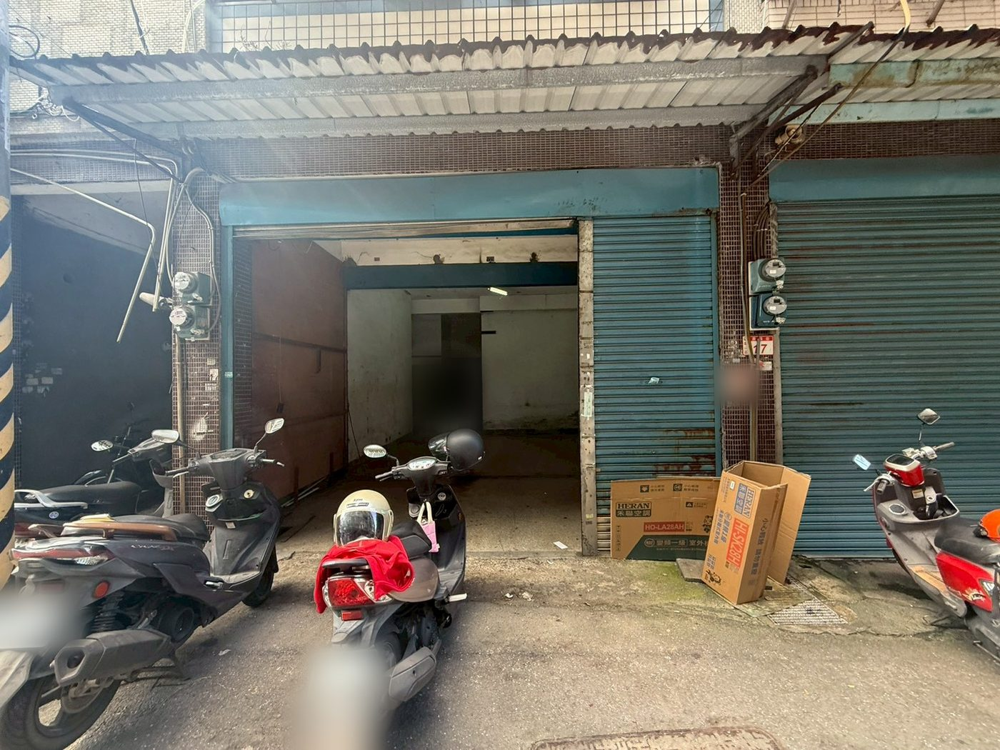
門外看進鐵捲門。畫面裡的車牌、車行電話貼紙與門牌號已做模糊處理，其餘一律照現況，沒有移除任何東西。
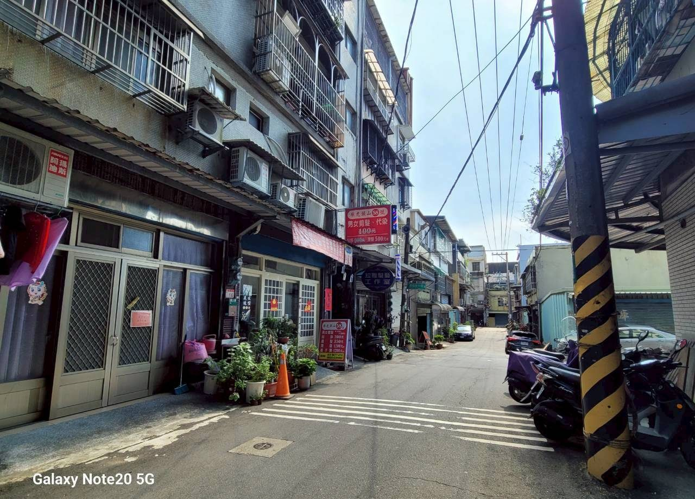
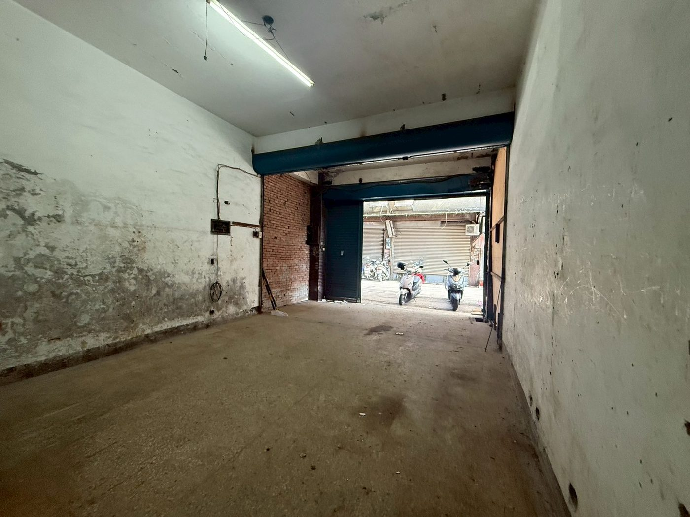
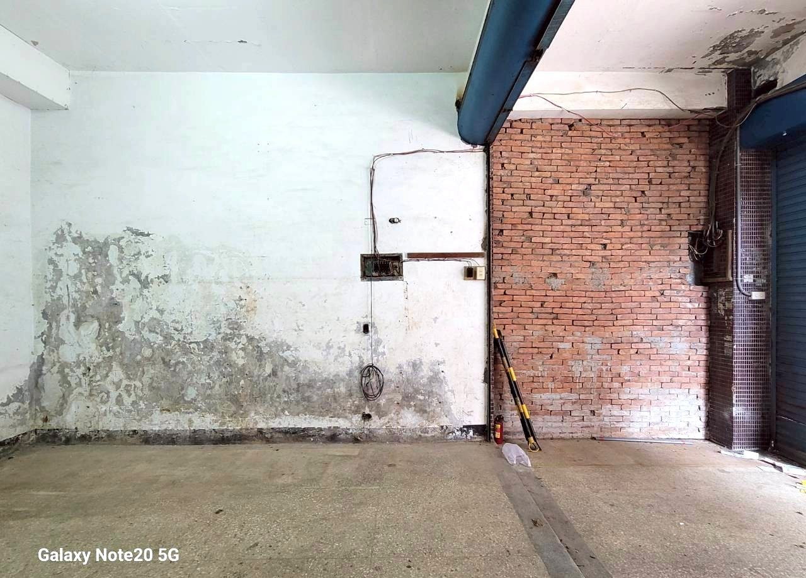
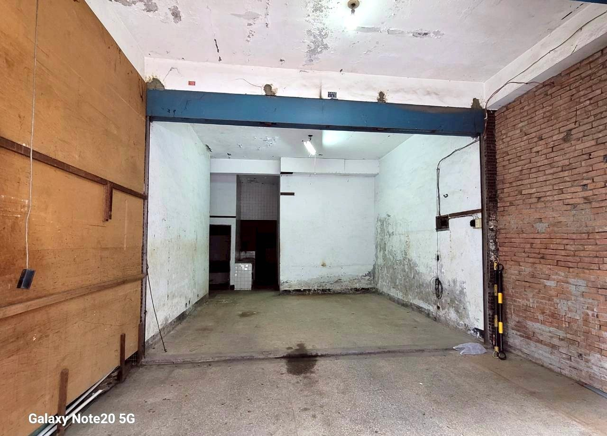
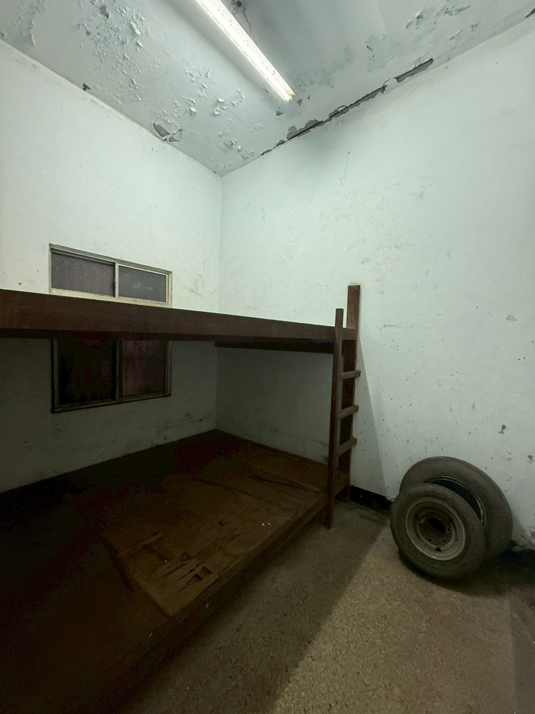
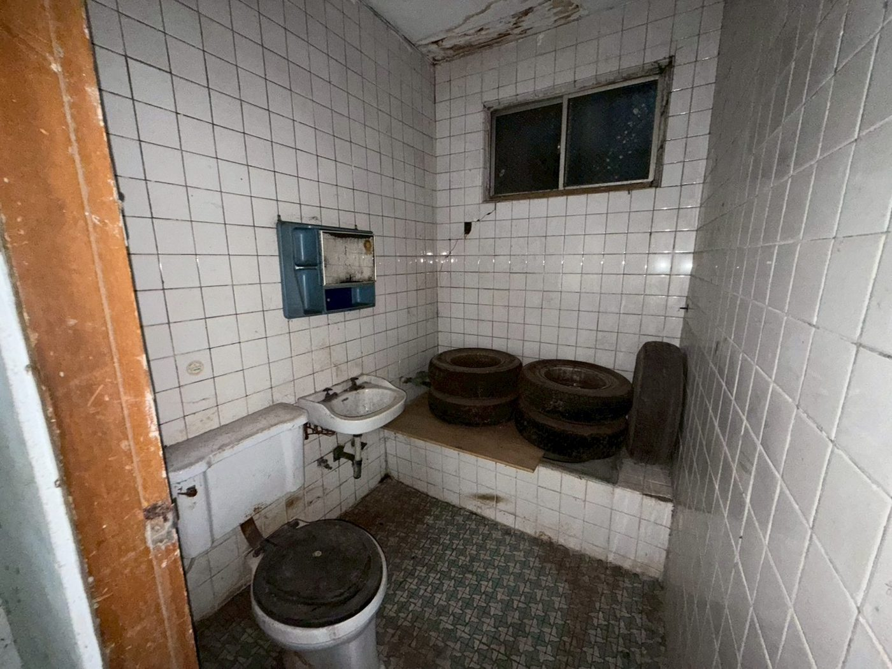
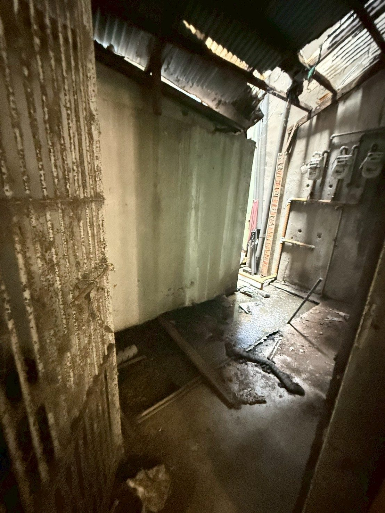
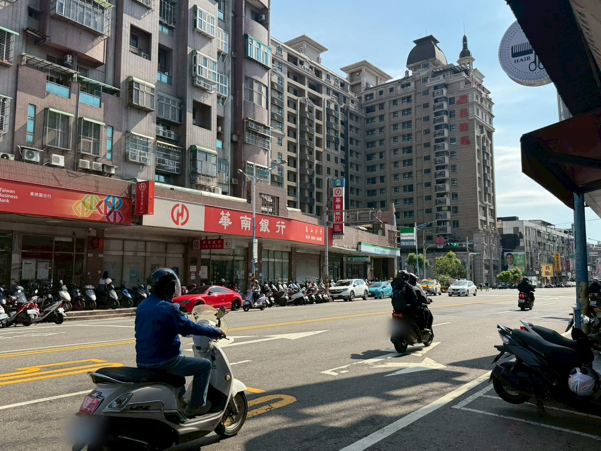
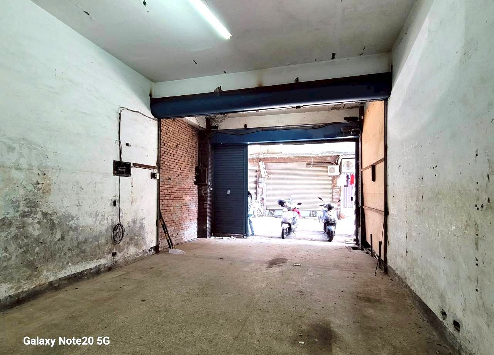
從鐵捲門往外看。街廓照片裡可辨識的車牌已做模糊處理。
我知道你剛剛看到什麼。紅磚牆、水泥地、看起來要花很多錢才能用的樣子。這幾個問題我每次帶看都被問，所以我先講。
重大瑕疵（漏水、海砂這類）責任歸屬在賣方，需確認歸屬並修繕完成；不涉及重大瑕疵的裝修維修，由你自行決定怎麼處理。本案是空屋，屋內沒有屋主留置物，不涉及清空點交。以上為制度說明，實際條件以買賣契約與不動產說明書為準。每一項的費用表與驗法都在進階頁，帶看當面逐項看。
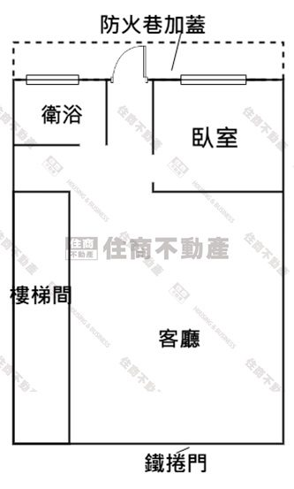
臨路面是鐵捲門，進門後是整片開放的客廳空間，最深處分成衛浴與一個獨立空間，後側標註防火巷加蓋。左側整條是公共樓梯間，不計入本戶。座向朝南（依委託資料）。
格局圖為委託方提供之示意圖，圖上原文標註「本格局圖僅供參考，仍需以現況格局為主」，本頁原樣保留、未做任何遮擋或裁切。實際格局與座向以現場、地政謄本與測量成果圖為準。
看房子最後都會卡在同一句話：「這樣的價格算不算合理？」我把三件事拆開讓你自己比——價格、生活圈、工作圈。每一項都是逐條列出來的實測值，我不給你一個總分，因為分數是我的權重，不是你的。
同一條街的實際成交紀錄，你可以自己上內政部實價登錄查證。橫條長度＝總價高低，共用同一把尺（最長為 880 萬）。只列一樓與含一樓的成交，樓上戶不同產品不放進來比。
資料來源：內政部不動產交易實價查詢服務網，壽福街全區成交紀錄，查證日 2026-09-03。門牌號依實價登錄公開揭露，本頁改以「同街＋樓別＋坪數」呈現。開價不等於成交價，實際成交金額由買賣雙方議定；成交資料以內政部網站公告為準，你可以自己查：
https://lvr.land.moi.gov.tw/
用同一個門檻逐項判定：走得到的距離＝約 1,000 公尺以內。橫條越短代表越近，八條共用同一把尺（最長為 2,000 公尺）。
距離為步行路線距離，依 OpenStreetMap 路網以 FOSSGIS OSRM 步行模式量測，查證日 2026-09-03，取整百公尺。不是直線距離，也不是 Google 地圖。「龜山市場」為委託資料所載之民間通稱，落點採 OpenStreetMap 收錄之「龜山後街市場」；桃園市經發局公有零售市場清單中龜山區僅列樂善、新路兩座。
一樓臨路的通勤主力是公車。上車點與路線條數逐項列出，每條路線開去哪裡，我還沒有逐條核對過官方停靠站表，所以這一格不做任何直達與否的宣稱。
公車路線條數與站名出自委託資料（帶看資訊）。捷運棕線進度出自桃園市政府捷運工程局「捷運棕線」與「軌道建設進度總覽」頁（頁面更新 115-09-03）：
https://dorts.tycg.gov.tw/cp.aspx?n=23134
https://dorts.tycg.gov.tw/cp.aspx?n=23173
上面比的是本案與同一條街的實際成交紀錄，每一筆都查得到出處。至於同區域、同總價帶其他仲介正在賣的一樓案，我還沒有逐案開頁查證過，所以這張看板不對那些案子做任何價格評價——沒查過的東西我不寫。還沒查的是這幾項：
查證方式是逐案開頁抄錄，再與內政部實價登錄的同期成交比對，查完我會把這張看板補齊。你現在就想比，帶看當天我把查到的直接攤給你看。
距離為步行路線距離，依 OpenStreetMap 路網量測，查證日 2026-09-03。
兩校為委託資料所載之鄰近學校。學區以戶籍完整門牌與當學年度官方公告為準，帶看前我幫你向學校查最新學區。
200 公尺內具名地物由 OpenStreetMap 圖資逐筆列出，共 91 筆看過一遍；距離為步行路線距離，取整百公尺，查證日 2026-09-03。
委託資料寫「桃園捷運棕線興建中」，這句話部分準確：先期工程（騎樓整平、陸橋拆除、路樹移植）確實已開工、機電系統統包也已決標，但主體土建尚未開工。這一段我照實更正，因為「興建中」三個字很容易被讀成主體正在施工。資料出自桃園市政府捷運工程局官方頁（更新 115-09-03）。
同一條街，一樓近三年的一般成交多落在 720～880 萬。這間 668 萬，差的那一段換的是「屋況要自己整理」——這是把錢花在你自己決定的地方，不是花在別人做好的裝潢上。
整層開放、挑高，中間沒有承重隔間卡住你。倉庫、工作室、自用，動線都由你自己畫。已經做好隔間的房子，你要先花錢拆掉才能照自己的意思做——這間省掉那一步。
華南銀行、臺灣企銀、7-Eleven、蝦皮店到店、12 條公車路線的站牌，全部在約 200 公尺內。桃園巨蛋約 700 公尺。一樓的價值就是「門一開就是人流」，這一段是新大樓給不了的。
這是一個「買下來就照自己意思做」的空間——原始屋況，但也正因為原始，你不用先付別人裝潢的錢，格局和用料都能照你真正要的樣子來。整理完，它就不再是一間 46 年沒動過的老屋，是一個在桃園市中心、走出門就是街、完全照你意思長出來的一樓。
銀行能貸幾成，每個人不一樣。四種成數的首付與月付我都算好了，你對照自己的狀況就知道這間扛不扛得住。
| 貸款成數 | 你要準備的首付 | 每月要繳 |
|---|---|---|
| 7 成 | 200.4 萬 | 18,318 元 |
| 7.5 成 | 167.0 萬 | 19,627 元 |
| 8 成 | 133.6 萬 | 20,935 元 |
| 8.5 成 | 100.2 萬 | 22,244 元 |
試算條件：總價 668 萬、30 年期、年利率 2.435%、無寬限期、本息平均攤還。這些是預設值，不是你的條件——成數、利率、年限每個人不一樣，實際以銀行核准為準。想換自己的數字重算，用這支工具：
https://0930848000.com/tools/#/loan
這間的數字不難算：委託總價 668 萬、20.05 坪、1 樓、朝南、46 年。它比同一條街其他一樓便宜的原因也不是秘密——屋況是原始的，而整理費是可以先算出來、可以分三層做、可以談進交易條件裡的。
所以真正決定你要不要買的，不是這些數字，是你要不要一個「門一開就是街、格局完全由自己決定」的一樓。要，這間划算；不要，你該看的是別的產品，不是勉強自己。
合不合，比買不買重要。我不勉強你——我只把該講的講完，剩下的你自己決定。覺得條件對得上，下面約我看現場。
再便宜的房子，你也會嫌貴——因為它不適合你。
再方便的地段，也有人覺得不對。不同的人要的根本不是同一件事：有人一定要靠捷運，有人只想要安靜；有人非要現成裝潢，有人先看預算能不能過。這些沒有誰對誰錯，只有合不合。
台灣有句老話——「福地福人居」。
你要是喜歡這間，我們先去看現場。價格的事交給我去跟屋主談，看能不能再往成交靠近一步。買賣不是一場你砍我擋的拉鋸，中間這個環節本來就是我要做的事，把它做好，這筆交易才會是良性的。
同樣是我在賣的，條件不一樣，每一間我都做了完整的資料頁。
車站低總價美 2 樓1068 萬 新北市板橋區・22.07 坪・2 樓・45.3 年 一張產權 一套出租一套空屋 學區捷運大戶1098 萬 新北市樹林區・31 坪・3 樓・43.8 年・全開放 格局不是別人決定的 是你自己決定的 曼哈頓 13 樓一般事務所1568 萬 新北市新莊區・37.40 坪・13 樓電梯・8.3 年 登記用途不是住家 三條路都走得通 都不合？填條件讓我幫你挑 →空屋，時段比一般好安排。想看實際挑高、縱深、木造上層平台與後側防火巷，直接約時間過來。
帶看前我會先把防火巷加蓋的查報情形與謄本主要用途查出來，帶去現場一起看。